Wartungen
Dieses Dokument beschreibt die Verfahren für die ordentliche und außerordentliche Wartung der Donatoni-Maschinen und enthält Anweisungen zur korrekten Durchführung von Kontrollen, Prüfungen und geplanten Wartungsarbeiten.
Ziel ist es, die Leistungsfähigkeit und Zuverlässigkeit der Maschine zu erhalten, mögliche Störungen zu vermeiden und das Risiko ungeplanter Stillstände zu verringern.
- STANDARD-FRÄSMASCHINEN
- VERGLEICHSTABELLE DER SCHMIERSTOFFE
- MN0001 PRÜFUNG DES NOT-HALT-KREISES
- MN0002 MONATLICHE WARTUNG DER VAKUUMPUMPE
- MN0003 FUNKTIONSPRÜFUNG DER SIGNALLEUCHTE
- MN0004 SCHMIERUNG DER LINEARFÜHRUNGEN DES MOVE-SYSTEMS
- MN0005 SCHMIERUNG DES LAGERS DER Z-ACHS-MUTTER
- MN0006 SCHMIERUNG DER LAGER DER ANTRIEBSWELLE DER Y-ACHS-BRÜCKE
- MN0007 KONTROLLE DES SCHMIERSTOFFS DES AUTOMATISCHEN SCHMIERSYSTEMS
- MN0008 SCHMIERUNG DER GELENKE DES KIPPTISCHES
- MN0009 SCHMIERUNG DES GELENKS DES KONSOLENARMS
- MN0010 KONTROLLE DER LEITUNGEN UND ANSCHLÜSSE DES HYDRAULIKSYSTEMS
- MN0011 ÖLWECHSEL AM HYDRAULIKAGGREGAT
- MN0012 REINIGUNG DER FILTER DES SCHALTSCHRANKS
- MN0013 WARTUNG DER DRUCKLUFT-EINGANGSEINHEIT
- MN0014 LAGER DER ELEKTROSPINDEL
- MN0041 SCHMIERUNG DER LINEARFÜHRUNGEN DER SEITENSPINDEL TOOL PLUS
- MN0042 REINIGUNG DES FILTERS DER PNEUMATIKANLAGE
- MN0043 DICHTHEITSPRÜFUNG DER DREHDURCHFÜHRUNG
- WATERJET
- MN0044 AUSTAUSCH DER DÜSE
- MN0045 MANUELLE SCHMIERUNG
- MN0039 REINIGUNG DER FILTER DER LÜFTUNGSÖFFNUNGEN DES SCHALTSCHRANKS
- MN0015 KONTROLLE DER LEITUNGEN UND ANSCHLÜSSE DES HOCHDRUCKSYSTEMS
- MN0030 KONTROLLE DES SCHMIERSTOFFS DES AUTOMATISCHEN SCHMIERSYSTEMS
- MN0016 KONTROLLE DES REINIGUNGSZUSTANDS UND ENTLEEREN DES BECKENS
- MN0035 WASSERQUALITÄT PRÜFEN
- MN0040 WARTUNG DER DRUCKLUFT-EINGANGSEINHEIT
- BFT-PUMPE
- DONATONI-HYDROX-PUMPE
- HYPERTHERM-PUMPE
- VENTILKEGELGRUPPE FÜR HOCHDRUCK
- MN0029 ENTLÜFTUNGSVENTIL REPARIEREN
- MN0017 RÜCKSCHLAGVENTILE UND VENTILKEGEL FÜR NIEDERDRUCK REPARIEREN
- MN0018 HOCHDRUCKZYLINDER REPARIEREN
- MN0019 KARTUSCHE DES HOCHDRUCK-DICHTELEMENTS ERSETZEN
- MN0021 VENTILKEGEL FÜR NIEDERDRUCK ERSETZEN
- MN0022 HOCHDRUCKZYLINDER UMDREHEN
- MN0023 HOCHDRUCKZYLINDER ERSETZEN
- MN0024 RÜCKSCHLAGVENTILGRUPPE ERSETZEN
- MN0025 GEHÄUSEGRUPPE DES DICHTELEMENTS ERSETZEN
- MN0026 AUSLASSADAPTER ERSETZEN
- MN0028 REPARATUR DES ZENTRALEN HYDRAULIKABSCHNITTS
- MN0034 WASSERFILTER ERSETZEN
- MN0031 KÖRPER DES ENTLÜFTUNGSVENTILS ERSETZEN
- MN0032 LUFTKÜHLER REINIGEN
- MN0036 HYDRAULIKFILTERELEMENT ERSETZEN
- MN0037 HYDRAULIKFLÜSSIGKEIT ERSETZEN
- MN0038 LAGER DES HAUPTMOTORS SCHMIEREN
- MN0020 VENTILKEGELGRUPPE FÜR HOCHDRUCK ERSETZEN
- MN0047 AUSTAUSCH DES FOKUSSIERROHRS
- MN0053 AUSTAUSCH DES STRAHLMITTELSCHLAUCHS
- SICHERHEITSHINWEISE
Liste der Standardwartungen für eine Fräsmaschine des Typs JET625


Vor dem Fortfahren sorgfältig lesen | |
Intervall200 Betriebsstunden | Schwierigkeitsgrad des VorgangsLow01 / 05 |
Berechtigte PersonMaschinenbediener | Vorgesehene PSA:  |
Video
Verfahren
Bei eingeschalteter und für den Betrieb im Zugangsmodus zum Gefahrenbereich vorbereiteter Maschine den Not-Halt-Taster drücken und Folgendes prüfen:
Dass auf dem Monitor des Bedienfelds der Status „NOT-HALT AKTIV“ angezeigt wird.
Dass der rote Bereich der Signalleuchte am Bedienfeld aufleuchtet.
Dass bei Betätigung einer beliebigen Maschinenachse über die Bedienhebel mit Haltefunktion am Bedienfeld keine Bewegung innerhalb der Maschine erfolgt.
Den Betrieb der Maschine wiederherstellen und Folgendes prüfen:
Dass die Meldung „NOT-HALT AKTIV“ auf dem Monitor des Bedienfelds erlischt.
Dass der rote Bereich der Signalleuchte am Bedienfeld erlischt.
Dass bei Betätigung einer beliebigen Maschinenachse über die Bedienhebel mit Haltefunktion am Bedienfeld die entsprechende Bewegung innerhalb der Maschine erfolgt.
Vor dem Fortfahren sorgfältig lesen | |
Intervallwöchentlich; monatlich | Schwierigkeitsgrad des VorgangsLow01 / 05 |
Berechtigte PersonMaschinenbediener | Vorgesehene PSA:  |
Video
Verfahren
Der einwandfreie Zustand der Vakuumpumpe hängt vom Reinheitsgrad des Wassers im Wassersystem ab. Der Käufer ist dafür verantwortlich sicherzustellen, dass die Eigenschaften des verwendeten Wassers den Vorgaben im Betriebs- und Wartungshandbuch des Pumpenherstellers entsprechen.
Wöchentlich:
Prüfen, dass der Wasserstand im Behälter bis zur Höhe des Überlaufrohrs reicht.
Bei sporadischer Nutzung des Vakuumsystems die Vakuumpumpe einmal pro Woche über den Befehl zur Aktivierung des Vakuums einschalten (siehe Abschnitt B des diesem Handbuch beigefügten Handbuchs „Bedienungsanleitung“).
Monatlich:
Den Behälter gründlich reinigen und eventuell am Boden angesammelte Sedimentablagerungen entfernen.
Für ausführlichere Hinweise zur Wartung der Vakuumpumpe siehe Betriebs- und Wartungshandbuch.
120113044828_Manuale_Vuoto_Italiano.pdf
Vor dem Fortfahren sorgfältig lesen | |
Intervall— | Schwierigkeitsgrad des VorgangsLow01 / 05 |
Berechtigte PersonMaschinenbediener | Vorgesehene PSA:  |
Bilder

Verfahren
Prüfung des orangefarbenen Bereichs der Signalleuchte:
Die Maschine für den Betrieb im Zugangsmodus zum Gefahrenbereich vorbereiten, wie im Kapitel – ZUGANGSMODUS ZUM GEFAHRENBEREICH beschrieben, und prüfen, dass der orangefarbene Bereich der Signalleuchte blinkt.
Die Maschine für den Betrieb im „Langsammodus“ vorbereiten (siehe Abschnitt B des diesem Handbuch beigefügten Handbuchs „Bedienungsanleitung“) und prüfen, dass der orangefarbene Bereich der Signalleuchte dauerhaft leuchtet.
Prüfung des grünen Bereichs der Signalleuchte:
Die Maschine für den Betrieb im Arbeitsmodus vorbereiten, wie im Kapitel – ARBEITSMODUS beschrieben, eine beliebige Maschinenachse über die Bedienhebel mit Haltefunktion am Bedienfeld bewegen (siehe Abschnitt B des diesem Handbuch beigefügten Handbuchs „Bedienungsanleitung“) und prüfen, dass der grüne Bereich der Signalleuchte während der Bewegung blinkt.
Prüfung des roten Bereichs der Signalleuchte:
Den Not-Halt-Taster am Bedienfeld drücken und prüfen, dass der rote Bereich der Signalleuchte blinkt.
HINWEIS: Zum Wiederherstellen des Maschinenbetriebs wie im Handbuch beschrieben vorgehen.
Vor dem Fortfahren sorgfältig lesen | |
Intervallalle 300 Betriebsstunden | Schwierigkeitsgrad des VorgangsLow01 / 05 |
Berechtigte PersonMaschinenbediener | Vorgesehene PSA:  |
Video
Bilder

Verfahren
Mindestens alle 300 Betriebsstunden die Linearführungen des MOVE-Systems mit einer geeigneten Fettpresse über die in der Abbildung gezeigten Schmiernippel mit 1cm3 Fett schmieren.
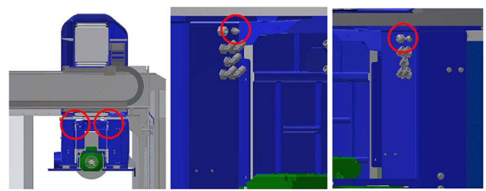
Vor dem Fortfahren sorgfältig lesen | |
Intervallalle 300 Betriebsstunden | Schwierigkeitsgrad des VorgangsLow01 / 05 |
Berechtigte PersonMaschinenbediener | Vorgesehene PSA:  |
Bilder

Verfahren
Mindestens alle 300 Betriebsstunden das Lager der Z-Achs-Mutter mit einer geeigneten Fettpresse über den in der Abbildung gezeigten Schmiernippel mit 1 cm3 Fett schmieren.
Der Schmiernippel befindet sich auf der rechten Seite der Pinole unter der in der Abbildung gezeigten Abdeckung und ist wie im Bild dargestellt und hervorgehoben positioniert.


Vor dem Fortfahren sorgfältig lesen | |
Intervallalle 300 Betriebsstunden | Schwierigkeitsgrad des VorgangsLow01 / 05 |
Berechtigte PersonMaschinenbediener | Vorgesehene PSA:  |
Video
Bild

Verfahren
Mindestens alle 300 Betriebsstunden die Lager der Antriebswelle der Y-Achse mit einer geeigneten Fettpresse über die in der Abbildung gezeigten Schmiernippel mit 1 cm3 Fett schmieren.
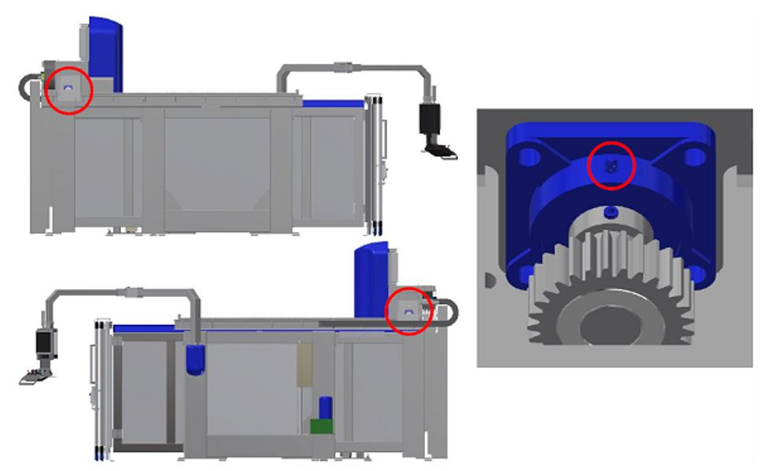
Vor dem Fortfahren sorgfältig lesen | |
Intervallalle 300 Betriebsstunden | Schwierigkeitsgrad des VorgangsLow01 / 05 |
Berechtigte PersonMaschinenbediener | Vorgesehene PSA:  |
Bilder

Verfahren
Das automatische Schmiersystem besteht aus einer automatischen Zentraleinheit, die die angeschlossenen Schmierstellen gemäß der programmierten Zeitsteuerung schmiert.
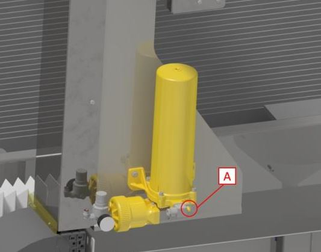
Der Behälter ist mit der erforderlichen Fettmenge nachzufüllen, ohne den angegebenen Höchststand zu überschreiten.
Mindestens alle 500 Betriebsstunden den Fettstand im Behälter prüfen und bei Bedarf mit der richtigen Fettsorte nachfüllen.
HINWEIS: Ein Alarm auf dem Bildschirm warnt den Bediener, wenn der Fettstand den Mindeststand im Behälter erreicht hat und daher nachgefüllt werden muss.
Gerätespezifisches Handbuch
Vor dem Fortfahren sorgfältig lesen | |
Intervallalle 6 Monate | Schwierigkeitsgrad des VorgangsLow01 / 05 |
Berechtigte PersonMaschinenbediener | Vorgesehene PSA:  |
Video
Bilder

Verfahren
Mindestens alle 6 Monate die Gelenke des Kipptisches mit einer geeigneten Fettpresse über die in der Abbildung gezeigten Schmiernippel mit 1cm3 Fett schmieren.

Vor dem Fortfahren sorgfältig lesen | |
Intervall— | Schwierigkeitsgrad des VorgangsLow01 / 05 |
Berechtigte PersonMaschinenbediener | Vorgesehene PSA:  |
Vor dem Fortfahren sorgfältig lesen | |
Intervalljährlich = 8760 h | Schwierigkeitsgrad des VorgangsLow01 / 05 |
Berechtigte PersonMaschinenbediener | Vorgesehene PSA:  |
Vor dem Fortfahren sorgfältig lesen | |
Intervallalle 2000 Betriebsstunden | Schwierigkeitsgrad des VorgangsLow01 / 05 |
Berechtigte PersonMaschinenbediener | Vorgesehene PSA:  |
Video
Verfahren
Der Ölwechsel ist in der Regel mindestens alle 2000 Betriebsstunden durchzuführen; beim Wechsel ist der Behälter gründlich zu reinigen.
Das Ablassen erfolgt über den unteren Stopfen (Pos. B in der Abbildung). Das Befüllen des Behälters mit Flüssigkeit muss über einen Filter mit einer Maschenweite von 10 Mikron durch den Einfüllstopfen (Pos. A in der Abbildung) erfolgen.

Vor dem Fortfahren sorgfältig lesen | |
Intervallalle 2000 Betriebsstunden | Schwierigkeitsgrad des VorgangsLow01 / 05 |
Berechtigte PersonMaschinenbediener | Vorgesehene PSA:  |
Verfahren
Arbeitsschritte
Den Schalter A in die Stellung OFF drehen. |  |
Die Türen D und E öffnen. |  |
Die Schutzabdeckung F und den Filter G entfernen. | 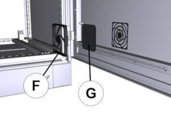 |
Den Filter mit einem Druckluftstrahl H reinigen. |  |
In umgekehrter Reihenfolge wieder montieren. |
Vor dem Fortfahren sorgfältig lesen | |
Intervall— | Schwierigkeitsgrad des VorgangsLow01 / 05 |
Berechtigte PersonMaschinenbediener | Vorgesehene PSA:  |
Vor dem Fortfahren sorgfältig lesen | |
Intervallalle 1550 Betriebsstunden | Schwierigkeitsgrad des VorgangsLow01 / 05 |
Berechtigte PersonMaschinenbediener | Vorgesehene PSA:  |
Vor dem Fortfahren sorgfältig lesen SICHERHEITSHINWEISE ⚠️ | |
Intervallalle 300 Betriebsstunden | Schwierigkeitsgrad des VorgangsLow01 / 05 |
Berechtigte PersonMaschinenbediener | Vorgesehene PSA:  |
Video
Verfahren
Mindestens alle 300 Betriebsstunden die Linearführungen des MOVE-Systems mit einer geeigneten Fettpresse über die in der Abbildung gezeigten Schmiernippel mit 1cm3 Fett schmieren.

Vor dem Fortfahren sorgfältig lesen SICHERHEITSHINWEISE ⚠️ | |
Intervallalle 2000 Betriebsstunden | Schwierigkeitsgrad des VorgangsLow01 / 05 |
Berechtigte PersonMaschinenbediener | Vorgesehene PSA:  |
Video
Spezifische Sicherheitshinweise für die Wartung
Vor der Reinigung des Filters die Anlage über das Absperrventil der Lufteinheit drucklos machen und das Ventil mit einem Vorhängeschloss sichern.
(Siehe Herstellerhandbuch
Verfahren
Hinweise zur Wartung der Druckluft-Eingangseinheit sind dem Betriebs- und Wartungshandbuch des Herstellers zu entnehmen.
Vor Wartungsarbeiten das Absperrventil schließen und mit einem Vorhängeschloss sichern.

Vor dem Fortfahren sorgfältig lesen SICHERHEITSHINWEISE ⚠️ | |
Intervallalle 500 Betriebsstunden | Schwierigkeitsgrad des VorgangsLow01 / 05 |
Berechtigte PersonMaschinenbediener | Vorgesehene PSA:  |
Verfahren
Prüfen, dass außen keine Anzeichen von Kühlmittelverlust vorhanden sind. Bei Undichtigkeiten das Bauteil durch das dafür vorgesehene Ersatzteil ersetzen.
Austausch
Beim Austausch wie nachfolgend beschrieben vorgehen.
Den Stopfen abschrauben. |  |
|---|---|
Einen 6mm-Inbusschlüssel in die zentrale Bohrung einführen. |  |
Den hinteren Stopfen wieder einschrauben. |  |
Bereich für Wartungsarbeiten, der bei Maschinen des Typs Waterjet von der Maschine aus erreichbar ist.

Vor dem Fortfahren sorgfältig lesen | |
Intervallalle 70 Betriebsstunden | Schwierigkeitsgrad des VorgangsLow01 / 05 |
Berechtigte PersonMaschinenbediener | Vorgesehene PSA:  |
Den Anschluss der Hochdruckleitung lösen (NICHT ABTRENNEN).

Den Ventilkörper festhalten und die darunterliegende Überwurfmutter abschrauben.

Das Ventil aushängen und versetzen.

Den Verbindungskörper abschrauben, um Zugang zum Düsensitz zu erhalten.


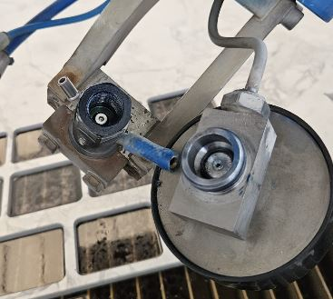
Die verschlissene Düse mithilfe eines Röhrchens, einer Zange oder eines anderen geeigneten Werkzeugs entfernen.

Die neue Düse in den Sitz einsetzen und auf die richtige Ausrichtung achten (konische Seite nach oben).
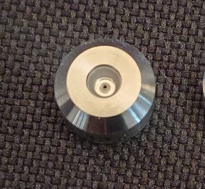
Die verschiedenen Anschlüsse reinigen und vor dem Befestigen Anti-Seize-Schmiermittel (Blue Goop) auftragen.

Für die Montage in umgekehrter Reihenfolge vorgehen und die vorgeschriebenen Anzugsdrehmomente einhalten.
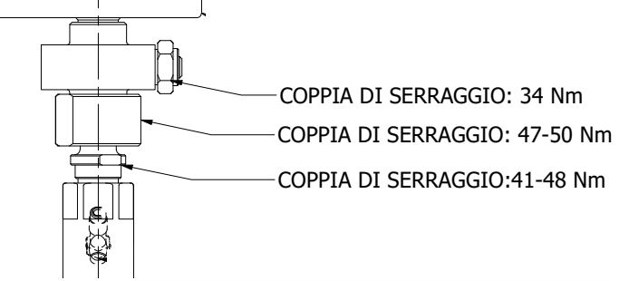
Angehängte Dokumente
Video
Vor dem Fortfahren sorgfältig lesen | |
Intervallalle 300 Betriebsstunden | Schwierigkeitsgrad des VorgangsLow01 / 05 |
Berechtigte PersonMaschinenbediener | Vorgesehene PSA:  |
Die nachfolgend aufgeführten Schmierstellen mit einer geeigneten Fettpresse jeweils mit 1cm3 EP1-Fett schmieren:
Linearführungen der Seitenspindel TOOL_

Linearführungen des Plattentasters

Getriebe der A-Achse
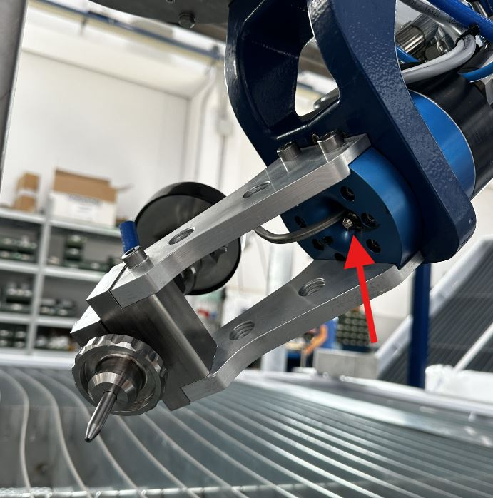
Vergleichstabelle der Schmierstoffe
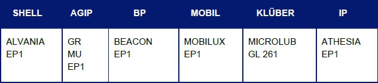
Vor dem Fortfahren sorgfältig lesen | |
Intervallalle 2000 Betriebsstunden | Schwierigkeitsgrad des VorgangsLow01 / 05 |
Berechtigte PersonMaschinenbediener | Vorgesehene PSA:  |
Die Maschine ordnungsgemäß ausschalten und den Schalter in die Stellung OFF drehen.
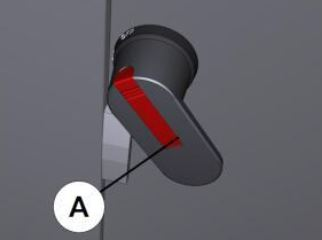
Die Abdeckung unten aushängen und nach oben abnehmen.


Den Filter mit einer Druckluftpistole reinigen.

Alles in umgekehrter Reihenfolge wieder montieren.
Vor dem Fortfahren sorgfältig lesen | |
Intervallalle 1000 Betriebsstunden | Schwierigkeitsgrad des VorgangsLow01 / 05 |
Berechtigte PersonMaschinenbediener | Vorgesehene PSA:  |
Verfahren
Die Maschine in der Mitte des Beckens positionieren. Die Pumpe einschalten und prüfen, ob entlang der Hochdruckleitungen Undichtigkeiten vorhanden sind.
Bei Undichtigkeiten die Pumpe ausschalten, den Not-Halt-Pilztaster drücken und die Undichtigkeit beseitigen, indem der Anschluss mit dem korrekten Anzugsdrehmoment festgezogen wird.
35 Nm für 1/4”-Anschlüsse
70 Nm für 3/8”-Anschlüsse
Anschließend den Not-Halt zurücksetzen, die Befehle freigeben und die Pumpe erneut einschalten, um auf weitere Undichtigkeiten zu prüfen.
Unter dem nachstehenden Link ist der Schaltplan der HP-Leitungen verfügbar.
Vor dem Fortfahren sorgfältig lesen | |
Intervallalle 450 Betriebsstunden | Schwierigkeitsgrad des VorgangsLow01 / 05 |
Berechtigte PersonMaschinenbediener | Vorgesehene PSA:  |
Verfahren
Das automatische Schmiersystem besteht aus einer automatischen Zentraleinheit, die die angeschlossenen Schmierstellen gemäß der programmierten Zeitsteuerung schmiert.
Der Behälter ist mit der erforderlichen Fettmenge nachzufüllen, ohne den angegebenen Höchststand zu überschreiten. Das Nachfüllen muss über den dafür vorgesehenen Anschluss erfolgen (A in der Abbildung).

Vor dem Fortfahren sorgfältig lesen | |
Intervallabhängig vom Strahlmittelverbrauch | Schwierigkeitsgrad des VorgangsLow01 / 05 |
Berechtigte PersonMaschinenbediener | Vorgesehene PSA:  |
Verfahren
Prüfen, dass die Brücke und die anderen Maschinenelemente nicht mit den zu bewegenden Teilen in Berührung kommen.
Den Ablasshahn öffnen, um das Becken zu entleeren.

Den Messerrahmen mithilfe der dafür vorgesehenen Stützen anheben (Gewicht des Rahmens = 750Kg).

Die Werkstück-Auffanggitter entfernen.
(OPTIONAL) Die Strahlmittel-Auffangbehälter anheben und entleeren. Anschließend reinigen und auf Unversehrtheit prüfen.

Das Becken gründlich reinigen und Strahlmittelrückstände entfernen.
Die Strahlmittel-Auffangbehälter, die Gitter und die Messerauflage wieder positionieren.
Vor dem Fortfahren sorgfältig lesen | |
Intervallalle 1000 Betriebsstunden | Schwierigkeitsgrad des VorgangsLow01 / 05 |
Berechtigte PersonMaschinenbediener | Vorgesehene PSA:  |
Vor dem Fortfahren sorgfältig lesen | |
Intervallalle 400 Betriebsstunden | Schwierigkeitsgrad des VorgangsLow01 / 05 |
Berechtigte PersonMaschinenbediener | Vorgesehene PSA:  |
Vor dem Fortfahren sorgfältig lesen | |
Intervall— | Schwierigkeitsgrad des VorgangsLow01 / 05 |
Berechtigte PersonMaschinenbediener | Vorgesehene PSA:  |
Vor dem Fortfahren sorgfältig lesen | |
Intervall— | Schwierigkeitsgrad des VorgangsLow01 / 05 |
Berechtigte PersonMaschinenbediener | Vorgesehene PSA:  |
Vor dem Fortfahren sorgfältig lesen | |
Intervallalle 150 Betriebsstunden | Schwierigkeitsgrad des VorgangsLow01 / 05 |
Berechtigte PersonMaschinenbediener | Vorgesehene PSA:  |
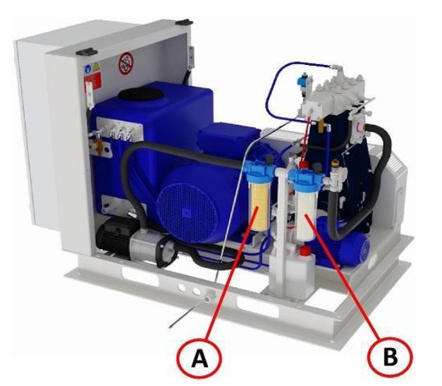
Position | Beschreibung | Filterfeinheit |
|---|---|---|
A | Wasserfilter mit 9/10"-Kartusche | 5 μm |
B | Wasserfilter mit 9/10"-Kartusche | 1 μm |
Kontrolle: Wann müssen sie ersetzt werden?
Die Filterkartuschen müssen ersetzt werden, wenn der Druckverlust im System größer als 1 bar wird (wenn die Druckdifferenz zwischen Eingangspunkt X und Ausgangspunkt Y beträgt: X-Y > 1 bar).

Austauschverfahren
Den Filterbehälter mit dem mitgelieferten Schlüssel abschrauben;

Die gebrauchte Filterkartusche entfernen;
Den Filterbehälter reinigen (eventuelle Rückstände oder Verunreinigungen entfernen);
Die neue Filterkartusche einsetzen (darauf achten, an jeder Position eine Kartusche mit der richtigen Filterfeinheit einzusetzen);
Den Filterbehälter in seinen Sitz einsetzen und mit dem Schlüssel festziehen;
Vor dem Fortfahren sorgfältig lesen | |
Intervallmonatlich | Schwierigkeitsgrad des VorgangsLow01 / 05 |
Berechtigte PersonMaschinenbediener | Vorgesehene PSA:  |
Ölstand des Pumpenmotors prüfen
Den Ölmessstab herausziehen und den Stand prüfen.
Außerdem prüfen, dass sich kein Schneidwasser im Schmierstoff „Emulsion“ befindet.

Kontrolle des Schmutzwasserbehälters
Wird im Behälter eine übermäßige Menge an Flüssigkeit oder Emulsion festgestellt, den technischen Kundendienst von Donatoni Service srl kontaktieren, um Anweisungen zu erhalten oder eine Überprüfung des Dichtsystems der Kolbenpumpe zu planen.

Zwischenraum der Hochdruckpumpe (Sichtprüfung)
Prüfen, dass die Faltenbälge nicht beschädigt sind. Bei Schäden den Kundendienst kontaktieren.
Bei Schäden am Faltenbalg auch auf mögliche Korrosion an der Stange des
Kolbens prüfen.Prüfen, ob Betriebsflüssigkeit im Zwischenraum vorhanden ist; in diesem
Fall den Kundendienst kontaktieren.

Vor dem Fortfahren sorgfältig lesen | |
Intervall1 Jahr bzw. ab dem zweiten Mal alle 4 Jahre | Schwierigkeitsgrad des VorgangsMedium03 / 05 |
Berechtigte PersonMaschinenbediener | Vorgesehene PSA:  |
Um den Stopfen des Ablassventils und den Einfüllstutzen zu erreichen, die Abdeckhaube (A) öffnen und die Frontabdeckung (C) sowie die Seitenabdeckung (B) entfernen.
Zum Auffangen des Öls ist ein geeigneter Auffangbehälter mit einem Fassungsvermögen von mehr als 5Litern erforderlich.
Einen Lappen oder Ähnliches unter den Ölablassstopfen (E) legen.

Den Stopfen (D) vom Öleinfüllstutzen entfernen.
Zum Ablassen des Öls den mitgelieferten Schlauch mit der dafür vorgesehenen Schraubverbindung verwenden. Sicherstellen, dass das offene Ende im vorbereiteten Auffangbehälter bleibt.
Den Stopfen des Ölablassventils (E) abschrauben. Das Öl beginnt auszutreten, sobald die Schraubverbindung des Schlauchs eingeschraubt wird.
Das Altöl auf Emulsion prüfen. Ist eine Emulsion vorhanden, die Feuchtigkeit aus dem Ölkreislauf entfernen.
Den Schlauch entfernen und den Stopfen des Ölablassventils (E) einschrauben.
Das Kurbelgehäuse mit etwa 4.3 Litern neuem Öl füllen und den Ölstand mit dem Messstab prüfen.
Viskositätsklasse des Öls: PAO ISO VG 320.
Am Ende des Dokuments befindet sich eine Vergleichstabelle.
 |  |
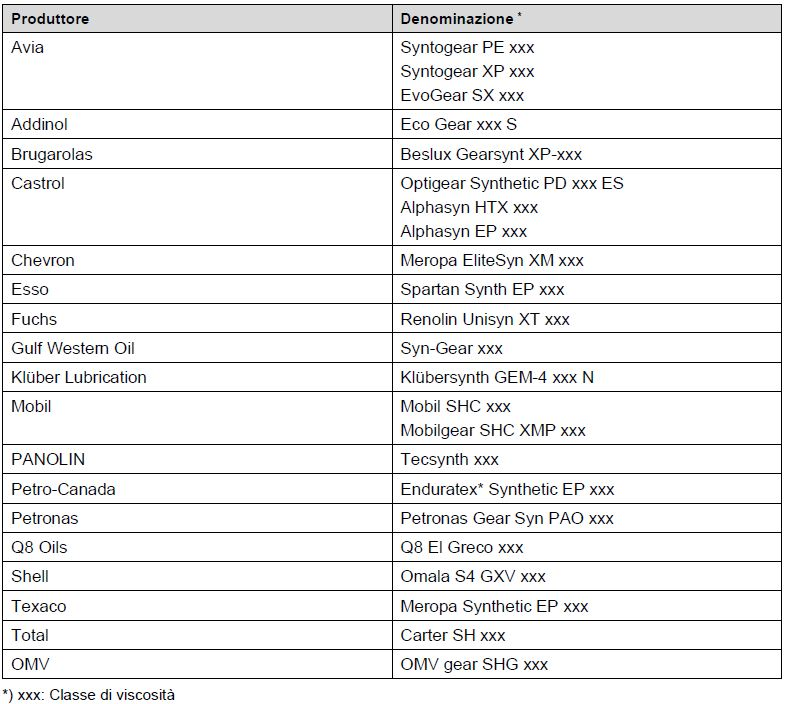
Vor dem Fortfahren sorgfältig lesen | |
Intervall1 Jahr bzw. ab dem zweiten Mal alle 4 Jahre | Schwierigkeitsgrad des VorgangsMedium03 / 05 |
Berechtigte PersonMaschinenbediener | Vorgesehene PSA:  |
Siehe Seite
MN0049 Ölwechsel der Hydrox-Pumpe
Vor dem Fortfahren sorgfältig lesen | |
Intervallalle 1500 Betriebsstunden | Schwierigkeitsgrad des VorgangsCritical05 / 05 |
Berechtigte PersonDonatoni Service | Vorgesehene PSA:  |
Einige Teile der Pumpe unterliegen Verschleiß; ihre Wartung muss von entsprechend geschultem Personal durchgeführt werden.
Die Wartungsarbeiten sind am Pumpenkopf und an der Kolben-/Zylindergruppe durchzuführen. Abhängig von den Betriebsstunden sind unterschiedliche Komponenten auszutauschen.
Für die Wartung den Donatoni-Kundendienst kontaktieren.


Vor dem Fortfahren sorgfältig lesen | |
Intervallalle 6000 Betriebsstunden | Schwierigkeitsgrad des VorgangsCritical05 / 05 |
Berechtigte PersonDonatoni Service | Vorgesehene PSA:  |
Die Spannung der Riemen muss nach genauen Vorgaben eingestellt werden. Für die Wartung den Donatoni-Kundendienst kontaktieren.

Vor dem Fortfahren sorgfältig lesen | |
Intervall— | Schwierigkeitsgrad des VorgangsLow01 / 05 |
Berechtigte PersonMaschinenbediener | Vorgesehene PSA:  |
Bilder
Vor dem Fortfahren sorgfältig lesen | |
Intervallalle 2000 Betriebsstunden | Schwierigkeitsgrad des VorgangsLow01 / 05 |
Berechtigte PersonMaschinenbediener | Vorgesehene PSA:  |
Bilder
Vor dem Fortfahren sorgfältig lesen | |
Intervallalle 1000 Betriebsstunden | Schwierigkeitsgrad des VorgangsLow01 / 05 |
Berechtigte PersonMaschinenbediener | Vorgesehene PSA:  |
Bilder

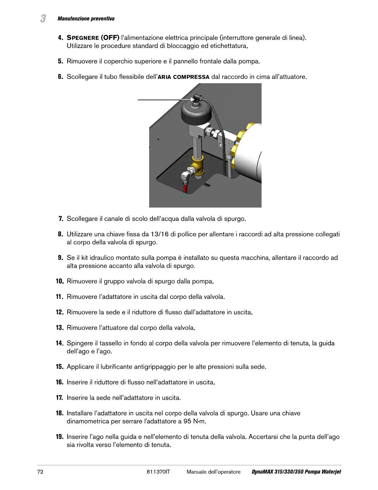

Vor dem Fortfahren sorgfältig lesen | |
Intervallalle 500 Betriebsstunden | Schwierigkeitsgrad des VorgangsLow01 / 05 |
Berechtigte PersonMaschinenbediener | Vorgesehene PSA:  |
Vor dem Fortfahren sorgfältig lesen | |
Intervallalle 500 Betriebsstunden | Schwierigkeitsgrad des VorgangsLow01 / 05 |
Berechtigte PersonMaschinenbediener | Vorgesehene PSA:  |
Vor dem Fortfahren sorgfältig lesen | |
Intervallalle 500 Betriebsstunden | Schwierigkeitsgrad des VorgangsLow01 / 05 |
Berechtigte PersonMaschinenbediener | Vorgesehene PSA:  |
Vor dem Fortfahren sorgfältig lesen | |
Intervallalle 1000 Betriebsstunden | Schwierigkeitsgrad des VorgangsLow01 / 05 |
Berechtigte PersonMaschinenbediener | Vorgesehene PSA:  |
Vor dem Fortfahren sorgfältig lesen | |
Intervallalle 1500 Betriebsstunden | Schwierigkeitsgrad des VorgangsLow01 / 05 |
Berechtigte PersonMaschinenbediener | Vorgesehene PSA:  |
Vor dem Fortfahren sorgfältig lesen | |
Intervallalle 3000 Betriebsstunden | Schwierigkeitsgrad des VorgangsLow01 / 05 |
Berechtigte PersonMaschinenbediener | Vorgesehene PSA:  |
Vor dem Fortfahren sorgfältig lesen | |
Intervallalle 3000 Betriebsstunden | Schwierigkeitsgrad des VorgangsLow01 / 05 |
Berechtigte PersonMaschinenbediener | Vorgesehene PSA:  |
Vor dem Fortfahren sorgfältig lesen | |
Intervallalle 6000 Betriebsstunden | Schwierigkeitsgrad des VorgangsLow01 / 05 |
Berechtigte PersonMaschinenbediener | Vorgesehene PSA:  |
Vor dem Fortfahren sorgfältig lesen | |
Intervallalle 6000 Betriebsstunden | Schwierigkeitsgrad des VorgangsLow01 / 05 |
Berechtigte PersonMaschinenbediener | Vorgesehene PSA:  |
Vor dem Fortfahren sorgfältig lesen | |
Intervallalle 12000 Betriebsstunden | Schwierigkeitsgrad des VorgangsLow01 / 05 |
Berechtigte PersonMaschinenbediener | Vorgesehene PSA:  |
Vor dem Fortfahren sorgfältig lesen | |
Intervallalle 1000 Betriebsstunden | Schwierigkeitsgrad des VorgangsLow01 / 05 |
Berechtigte PersonMaschinenbediener | Vorgesehene PSA:  |
Vor dem Fortfahren sorgfältig lesen | |
Intervallalle 3000 Betriebsstunden | Schwierigkeitsgrad des VorgangsLow01 / 05 |
Berechtigte PersonMaschinenbediener | Vorgesehene PSA:  |
Vor dem Fortfahren sorgfältig lesen | |
Intervallalle 1000 Betriebsstunden | Schwierigkeitsgrad des VorgangsLow01 / 05 |
Berechtigte PersonMaschinenbediener | Vorgesehene PSA:  |
Vor dem Fortfahren sorgfältig lesen | |
Intervallalle 1500 Betriebsstunden | Schwierigkeitsgrad des VorgangsLow01 / 05 |
Berechtigte PersonMaschinenbediener | Vorgesehene PSA:  |
Vor dem Fortfahren sorgfältig lesen | |
Intervallalle 3000 Betriebsstunden | Schwierigkeitsgrad des VorgangsLow01 / 05 |
Berechtigte PersonMaschinenbediener | Vorgesehene PSA:  |
Vor dem Fortfahren sorgfältig lesen | |
Intervallalle 3000 Betriebsstunden | Schwierigkeitsgrad des VorgangsLow01 / 05 |
Berechtigte PersonMaschinenbediener | Vorgesehene PSA:  |
Vor dem Fortfahren sorgfältig lesen | |
Intervallalle 1000 Betriebsstunden | Schwierigkeitsgrad des VorgangsLow01 / 05 |
Berechtigte PersonMaschinenbediener | Vorgesehene PSA:  |
Vor dem Fortfahren sorgfältig lesen | |
Intervallalle 100 Betriebsstunden | Schwierigkeitsgrad des VorgangsLow01 / 05 |
Berechtigte PersonMaschinenbediener | Vorgesehene PSA:  |
Den Taster entfernen, um die Demontage zu erleichtern.
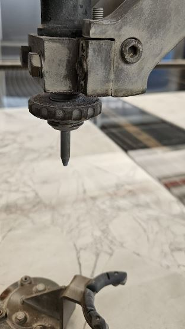
Die Überwurfmutter drehen, um das Fokussierrohr zu entfernen.

Das Fokussierrohr durch ein neues Bauteil ersetzen und dabei den Distanzring übernehmen.

Nach dem Einsetzen des neuen Teils wieder zusammenbauen und die Überwurfmutter festschrauben.

Den Plattentaster wieder montieren.

Die Düsenantastung durchführen, um den korrekten Wert „Delta Z“ einzustellen.
Vídeo
Vor dem Fortfahren sorgfältig lesen | |
Intervallalle 1000 Betriebsstunden | Schwierigkeitsgrad des VorgangsMedium03 / 05 |
Berechtigte PersonMaschinenbediener | Vorgesehene PSA:  |
Die A-Achse auf 90_ drehen, um anschließend Zugang zum Verschluss am Kopf zu erhalten.
Die Abdeckung entfernen.
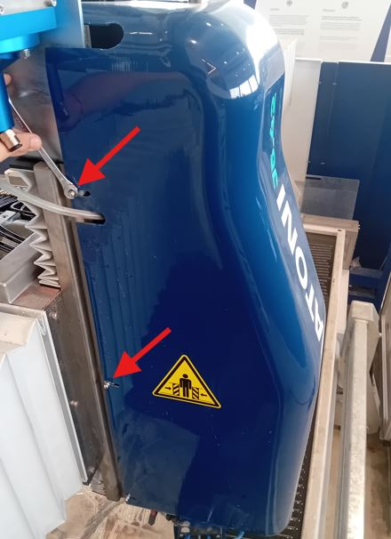
Die Schutzabdeckung unter dem Kopf entfernen.
Die Schlauchhalterung entfernen.
Den Schlauch von unten herausziehen und sich den Verlauf merken; der neue Schlauch muss anschließend auf demselben Weg verlegt werden.
Den neuen Strahlmittelschlauch einführen.
Den Schlauch mit der dafür vorgesehenen Befestigung sichern.
Die Abdeckungen wieder schließen und auf die unter dem Kopf vorhandenen Kabel achten.
Video
Vor Beginn jeglicher Installations-, Einrichtungs- oder Wartungsarbeiten ALLE mit der Maschine gelieferten Betriebsanleitungen, Dokumente und Leitfäden sorgfältig lesen.
Die Person, die den Vorgang ausführt, trägt die alleinige Verantwortung für den ordnungsgemäßen Betrieb und die Wartung der Maschine.
Donatoni Macchine lehnt ausdrücklich jede Haftung für Unfälle (einschließlich Todesfälle) oder Schäden an der Ausrüstung oder anderen Sachwerten ab, die durch unsachgemäße Verwendung oder Wartung der Maschine sowie durch die Nichtbeachtung der im Betriebshandbuch der Ausrüstung oder in sonstigen Sicherheitsunterlagen und -verfahren festgelegten Verfahren entstehen. Bei Problemen oder Schwierigkeiten wird dringend empfohlen, Donatoni Macchine oder das zuständige Servicezentrum zu kontaktieren.
Sicherheit hat oberste Priorität. Bei Fragen wenden Sie sich bitte unter den folgenden Kontaktdaten an den Donatoni-Kundendienst:
T: _39 045 6862899
WhatsApp: _39 045 7740052
Telegram: @donatonimacchine_bot